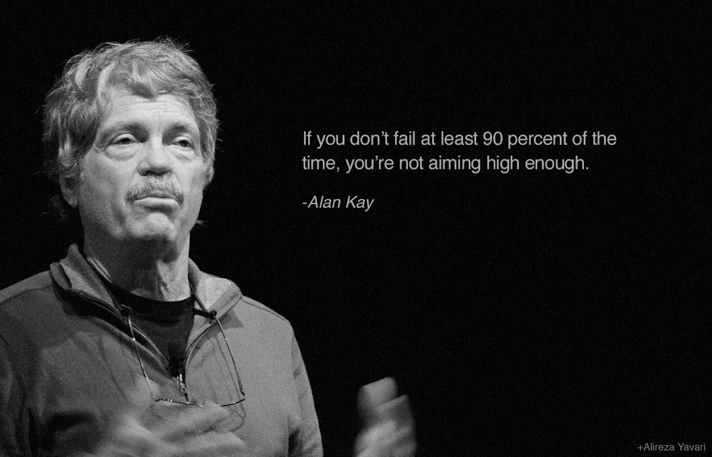

Chi siamo
Giorgio Robino & Giuditta Del Buono

Il blog, ideato e curato da Giorgio Robino e Giuditta Del Buono, organizzatori dell’evento #convcomp2016 , ha l’obiettivo di approfondire, sul piano tecnologico, sociale e di business, le tematiche correlate ad engine cognitivi ed applicazioni conversazionali multimodali.
La volontà è quella di stimolare attraverso il blog il confronto tra esperti ed appassionati provenienti da diversi settori e attivi sia nell’ambito della ricerca sia in quello dell’impresa, allo scopo di porre l’accento sulla necessità di un approccio multidimensionale nell’ambito della progettazione delle applicazioni conversazionali.
Giorgio Robino, ingegnere del software, si interessa dal 2015 di applicazioni conversazionali, seguendo costantemente l’evoluzione globale sia delle tecnologie sia del mercato. Attualmente svolge attività di ricerca presso il CNR — Istituto per le Tecnologie Didattiche, dove sta collaborando alla realizzazione di un progetto finalizzato all’impiego delle applicazioni conversazionali per l’insegnamento della lingua italiana agli stranieri. Twitta quotidianamente su queste tematiche, con particolare attenzione alle applicazioni vocali, dal suo account solyarisoftware.
Giuditta Del Buono, ingegnere, ha esperienza nelle aree del trasferimento tecnologico, del supporto alle start-up e dell’open innovation. Attualmente lavora presso Netalia, cloud provider italiano. Mette in ConvComp la curiosità verso lo sviluppo di nuove forme di interazione tra uomo e macchina e la passione per la creazione di nuove collaborazioni che coinvolgano ricerca, impresa e in generale soggetti eterogenei sotto il profilo settoriale e dimensionale.
Editors e writers: https://convcomp.it/about
E-mail: giorgio.robino@gmail.com
Vuoi ricevere aggiornamenti su nuovi articoli ?
Originally published on Medium.